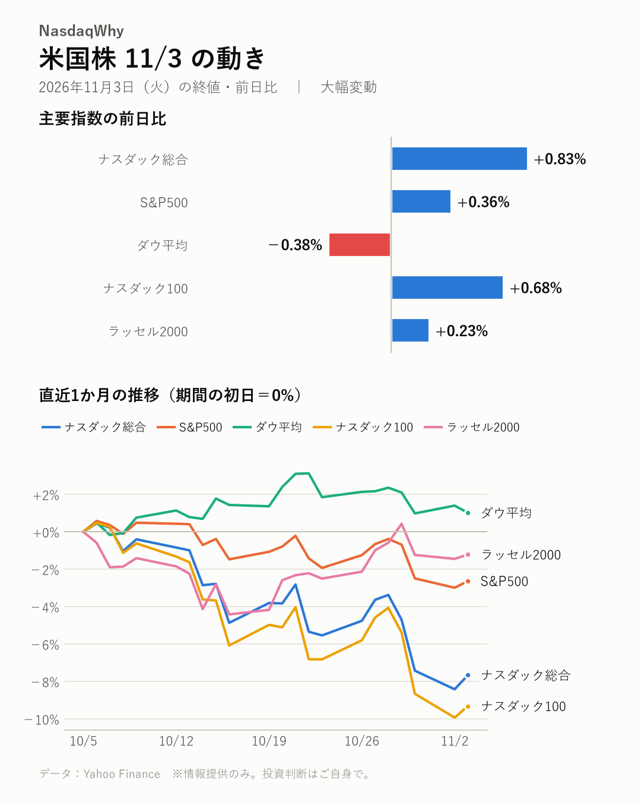
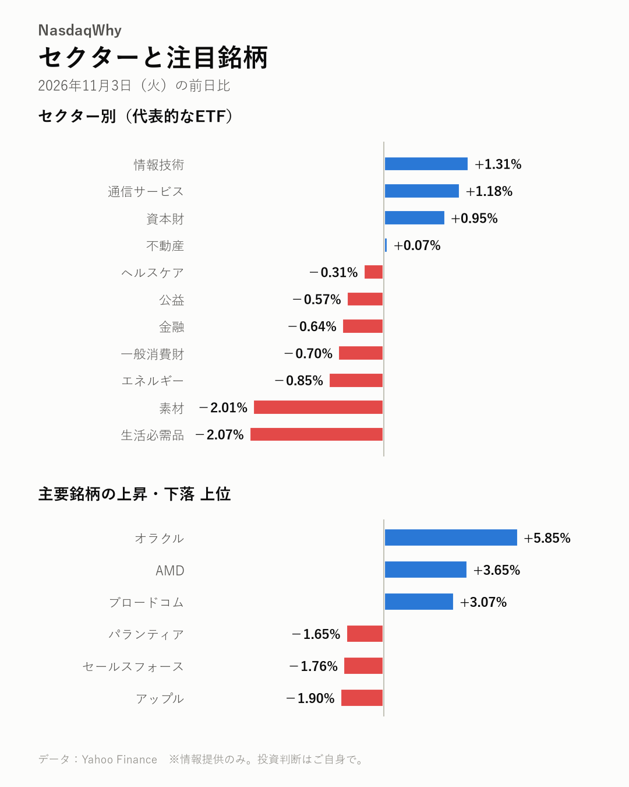

11/3の米国株：中間選挙の投票日、ハイテク株高でナスダック総合は+0.83%と上げ、ダウ平均は-0.38%と下落した
2026年11月3日（火）の米国市場（日本時間の翌朝更新） ｜ 大幅変動

主要指数
| 名前 | 終値 | 前日比 | 騰落率 |
|---|---|---|---|
| ナスダック総合 | 25,372.01 | +207.70 | +0.83% |
| S&P500 | 7,568.92 | +27.52 | +0.36% |
| ダウ平均 | 51,786.72 | -197.26 | -0.38% |
| ナスダック100 | 28,180.26 | +190.44 | +0.68% |
| ラッセル2000 | 2,812.45 | +6.57 | +0.23% |
なぜ動いた？
- 中間選挙の投票日に当たり、ハイテク株は買われた。ダウ平均は下げ、指数ごとに明暗が分かれた（出典：The Economic Times、AOL.com）
- オラクルは前日、大規模な資金調達を嫌気して急落していた。この日は反発し、割安感を指摘する見方も出た（出典：Yahoo Finance、Yahoo Finance、Seeking Alpha）
- AMDは引け後に決算を発表した。AI向け半導体の販売が伸び、内容は市場予想を上回った（出典：CNBC）
深掘り：大きく動いた背景
米国株は指数ごとに明暗が分かれた。ナスダック総合は+0.83%、S&P500は+0.36%と上げた。ダウ平均は-0.38%と下落した。この日は中間選挙の投票日だった。エコノミック・タイムズは、相場がまちまちになった様子を伝えた。 この日の主役はオラクルだ。株価は+5.85%と急反発した。同社は株式と社債を組み合わせた大規模な資金調達を打ち出している。資金はAI向けデータセンターの整備に充てる。前日は借り入れの増加と、株式の価値が薄まる希薄化が嫌気された。株価はこの懸念から急落していた。 この日は株式の売り出し価格が固まった。割安感を指摘する声や、投資判断を引き上げる見方も出た。ただ、ウェドブッシュは資金調達に懸念を示している。信用格付けへの影響を意識する向きも残る。 半導体株も買われた。AMDは+3.65%、エヌビディアは+2.29%、マイクロンは+2.58%。AMDは決算を前に株価が大きく下げていた。引け後の決算では、データセンター部門の売上高が大きく伸びた。CNBCによると、時間外取引で株価は上昇した。 生活必需品と素材はそろって大きく下げた。両セクターの下げについて、明確な材料は見当たらない。米10年債利回りは4.952%に上昇した。選挙結果の行方とAMD決算への反応が、次の焦点になる。
セクター
情報技術は+1.31%、通信サービスは+1.18%と上げた。生活必需品は-2.07%、素材は-2.01%と大きく下げた。両セクターの下げに明確な材料は見当たらない。
- 騰落率の高い順：情報技術 +1.31%、通信サービス +1.18%、資本財 +0.95%
- 騰落率の低い順：生活必需品 -2.07%、素材 -2.01%、エネルギー -0.85%

注目銘柄
オラクルは+5.85%と急反発した。前日は大規模な資金調達を嫌気した売りが膨らんでいた。半導体株は堅調で、AMDは+3.65%、ブロードコムは+3.07%。アップルは-1.90%と下げた。
- 上昇：オラクル（ORCL）+5.85%、AMD（AMD）+3.65%、ブロードコム（AVGO）+3.07%
- 下落：アップル（AAPL）-1.90%、セールスフォース（CRM）-1.76%、パランティア（PLTR）-1.65%
関連市場
| 名前 | 終値 | 前日比 | 騰落率 |
|---|---|---|---|
| 米10年債利回り | 4.952% | +0.058pt | ― |
| ドル円 | 157.91 | +0.24 | +0.15% |
| 金先物 | 3,940.40 | -29.20 | -0.74% |
| 原油先物(WTI) | 96.09 | -0.37 | -0.38% |
※取得できず：ビットコイン
米10年債利回りは4.952%に上昇した。ドル円は157.91円と円安が進んだ。金先物は-0.74%と下落。原油先物(WTI)は-0.38%。
今後の注目
- 中間選挙の結果と相場への影響（AOL.com）
- AMD決算を受けた株価の反応（CNBC）
- オラクルの資金調達と信用格付けの行方（TradingKey）
- 12/9（水） FOMCの金融政策発表（公式発表）
出典（見出し）
- The Economic Times：Why is the US stock market split as Americans vote in the 2026 midterm elections today? Dow falls as S&P 500 and Nasdaq rise; Apple, Nvidia, and AMD in focus - gold and silver dip（記事）
- AOL.com：Stock market today: Dow, S&P 500, Nasdaq futures waver ahead of midterm election results, AMD earnings（記事）
- Yahoo Finance：Oracle Sinks 7% on $20 Billion Stock and Bond Sale to Fund AI Buildout（記事）
- Yahoo Finance：Oracle (ORCL): A Top 10 Cheap AI Stock Trading at Just 11x Forward Earnings（記事）
- Seeking Alpha：Oracle: Recovery Is Overdue (Rating Upgrade) (NYSE:ORCL)（記事）
- CNBC：AMD stock jumps 7% on earnings as data center revenue nearly doubles（記事）
- TradingKey：Oracle Stock Forecast: ORCL Breaks $123.47 Support as a $20 Billion Raise Puts Its Credit Rating in Focus（記事）
データ：Yahoo Finance